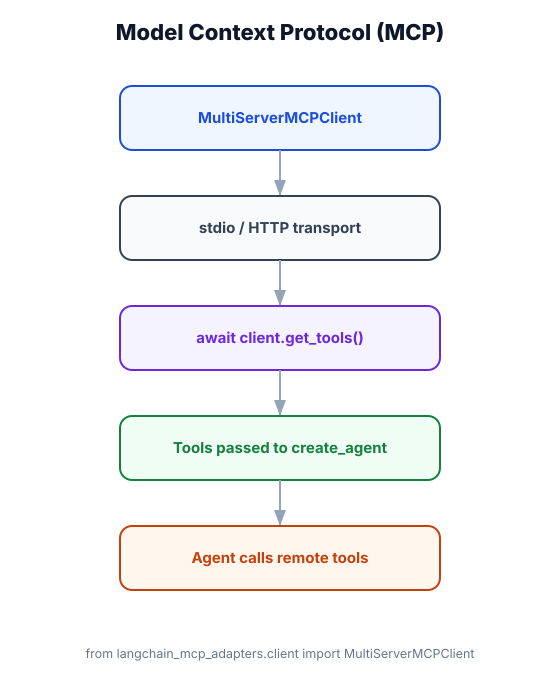

Model Context Protocol — Plug In Any Tool Server
What you'll learn: What MCP is, how to connect LangChain agents to MCP servers using MultiServerMCPClient, the two transport types (stdio and HTTP/SSE), and how to build your own minimal MCP server.

↗ Open full size · ⬇ Edit in Excalidraw — labels use real LangChain classes.
Before USB-C, every device had a different connector. MCP is the "USB-C for AI tools" — a single standard protocol so any AI agent can plug into any tool server without custom integration code. Your agent doesn't need to know whether the tool runs as a local process, a remote API, or inside another application. It just calls the tool by name, and MCP handles the transport.
MCP in 60 Seconds
MCP (Model Context Protocol) is an open standard for agents to discover and invoke tools hosted by external processes. Instead of writing a custom Python function for every external service, you connect to an MCP server that already exposes those tools in a standard format. LangChain's MultiServerMCPClient handles connection management, tool discovery, and invocation.
| Concept | Meaning |
|---|---|
| MCP server | An external process (local or remote) that exposes tools, resources, and prompts via the MCP protocol |
| stdio transport | Server runs as a local subprocess; agent communicates via stdin/stdout. Best for local tools (filesystem, git, code execution) |
| HTTP/SSE transport | Server runs as a remote HTTP service; agent connects via SSE. Best for shared services and cloud tools |
| MultiServerMCPClient | LangChain's adapter that connects to multiple MCP servers simultaneously and converts their tools into LangChain-compatible tools |
Transport Types
📦 stdio Transport
MCP server is a local subprocess. LangChain launches it with command=["python", "server.py"] and communicates via stdin/stdout. Best for local tools that need filesystem or system access. No network required.
🌐 HTTP/SSE Transport
MCP server runs as a remote HTTP endpoint. LangChain connects via url="http://localhost:8080". Best for shared tools, cloud services, or tools that need to run on a different machine or in a container.
Connecting Agents to MCP Servers
from langchain_mcp_adapters.client import MultiServerMCPClient
from langchain.agents import create_agent
from langchain.chat_models import init_chat_model
from langchain_core.messages import HumanMessage
# ── Connect to multiple MCP servers simultaneously ─────────────────────────────
async def build_agent():
async with MultiServerMCPClient(
{
# stdio transport — launches a local process
"filesystem": {
"command": "npx",
"args": ["-y", "@modelcontextprotocol/server-filesystem", "/home/user/workspace"],
"transport": "stdio",
},
# stdio transport — another local tool
"git": {
"command": "uvx",
"args": ["mcp-server-git"],
"transport": "stdio",
},
# HTTP/SSE transport — connects to a remote server
"brave-search": {
"url": "http://localhost:8080/sse",
"transport": "sse",
"headers": {"Authorization": f"Bearer {BRAVE_API_KEY}"},
},
# Another remote server
"postgres-db": {
"url": "http://db-mcp.internal:9000/sse",
"transport": "sse",
},
}
) as client:
# Automatically discover all tools from all connected servers
tools = await client.get_tools()
print(f"Loaded {len(tools)} tools from MCP servers")
# Wire into create_agent — tools work identically to @tool functions
agent = create_agent(
model=init_chat_model("openai:gpt-4o-mini"),
tools=tools, # MCP tools are directly usable here
system_prompt="You are a developer assistant with access to files, git, and web search.",
)
result = await agent.ainvoke({
"messages": [HumanMessage("List the Python files in the workspace and show me the git log")]
})
print(result["messages"][-1].content)
return result
import asyncio
asyncio.run(build_agent())Mixing MCP Tools with Custom Tools
from langchain.tools import tool
from langchain_mcp_adapters.client import MultiServerMCPClient
from langchain.agents import create_agent
from langchain.chat_models import init_chat_model
# Your own custom @tool functions
@tool
def format_as_markdown(text: str) -> str:
"""Format the provided text as a well-structured markdown document.
Args:
text: Raw text to format.
"""
# Custom formatting logic
return f"# Document\n\n{text}"
@tool
def send_slack_notification(channel: str, message: str) -> str:
"""Send a message to a Slack channel.
Args:
channel: The channel name (e.g., '#engineering').
message: The message to send.
"""
# Your Slack SDK call
return f"Sent to {channel}: {message}"
async def build_mixed_agent():
async with MultiServerMCPClient(
{
"filesystem": {
"command": "npx",
"args": ["-y", "@modelcontextprotocol/server-filesystem", "."],
"transport": "stdio",
},
}
) as client:
mcp_tools = await client.get_tools()
# Combine MCP tools + your custom tools seamlessly
all_tools = mcp_tools + [format_as_markdown, send_slack_notification]
agent = create_agent(
model=init_chat_model("openai:gpt-4o-mini"),
tools=all_tools,
)Building a Minimal MCP Server (Python)
"""
Minimal MCP server exposing custom tools.
Install: pip install mcp
Run: python my_mcp_server.py (then connect via stdio transport)
"""
from mcp.server import Server
from mcp.server.stdio import stdio_server
from mcp import types
import json
# Create the server
app = Server("my-custom-server")
# ── Register tools ─────────────────────────────────────────────────────────────
@app.list_tools()
async def list_tools() -> list[types.Tool]:
return [
types.Tool(
name="get_weather",
description="Get current weather for a city",
inputSchema={
"type": "object",
"properties": {
"city": {"type": "string", "description": "City name"}
},
"required": ["city"],
},
),
types.Tool(
name="convert_currency",
description="Convert an amount from one currency to another",
inputSchema={
"type": "object",
"properties": {
"amount": {"type": "number"},
"from_currency": {"type": "string"},
"to_currency": {"type": "string"},
},
"required": ["amount", "from_currency", "to_currency"],
},
),
]
# ── Handle tool calls ──────────────────────────────────────────────────────────
@app.call_tool()
async def call_tool(name: str, arguments: dict) -> list[types.TextContent]:
if name == "get_weather":
city = arguments["city"]
# Your actual implementation here
result = f"Weather in {city}: 22°C, partly cloudy"
return [types.TextContent(type="text", text=result)]
elif name == "convert_currency":
# Your currency conversion logic
result = f"{arguments['amount']} {arguments['from_currency']} = X {arguments['to_currency']}"
return [types.TextContent(type="text", text=result)]
raise ValueError(f"Unknown tool: {name}")
# ── Start server ───────────────────────────────────────────────────────────────
async def main():
async with stdio_server() as (read_stream, write_stream):
await app.run(read_stream, write_stream, app.create_initialization_options())
if __name__ == "__main__":
import asyncio
asyncio.run(main())
# Connect from LangChain:
# MultiServerMCPClient({
# "my-server": {
# "command": "python",
# "args": ["my_mcp_server.py"],
# "transport": "stdio",
# }
# })If you connect two MCP servers that both expose a tool named read_file, you'll get a collision. Use the tool_name_prefix option in MultiServerMCPClient to namespace tools by server: "filesystem": {"tool_name_prefix": "fs", ...} turns read_file into fs_read_file. Always check for naming conflicts when combining multiple servers.
🛠️ Developer Productivity Agent
An internal developer tool connects to four MCP servers: @modelcontextprotocol/server-filesystem for reading/writing project files, a custom jira-mcp-server for ticket management, a github-mcp-server for PR and commit operations, and a datadog-mcp-server for querying metrics and logs. The agent gains 30+ tools across all four systems instantly. Developers ask in natural language: "Create a ticket for the p99 latency regression, link it to the deploy from yesterday, and open a PR with a fix proposal." The agent orchestrates across all four systems with a single invocation.
MCP standardizes how agents connect to external tool servers. Use MultiServerMCPClient as an async context manager to connect and discover tools. stdio transport for local processes, sse for remote HTTP servers. MCP tools integrate identically to @tool functions — pass them to create_agent(tools=...). You can mix MCP tools and custom tools freely. Build your own MCP server with the mcp Python package to expose any service in a standard way.